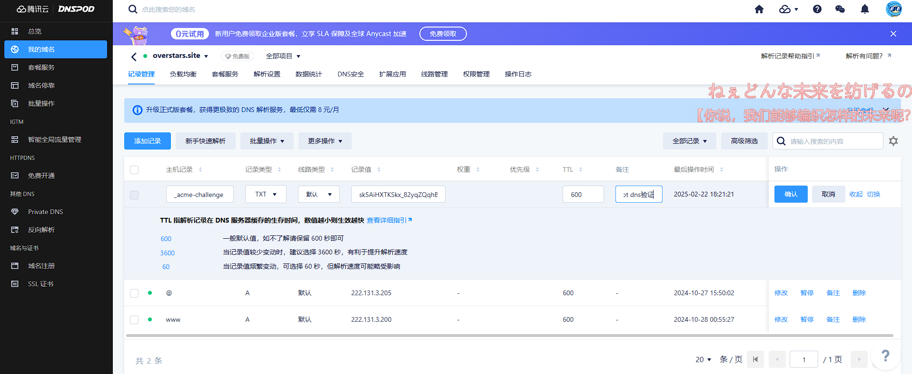

github pages强制使用https访问，即使是硬编码http也不行。此时就需要部署nginx。
本文介绍如何使用docker部署一个nginx，并且配置SSL以支持https访问。
Nginx 涉及到的Docker相关命令参考《Linux常用命令实践》
graph LR
Browser -->|HTTP 80| Nginx
Browser -->|HTTPS 443| Nginx
Nginx -->|HTTP 9003| Spring服务
拉取 Nginx 镜像 1 2 3 4 5 6 # 拉取官方最新版 Nginx 镜像 sudo docker pull nginx:latest # 拉不下来换个源 docker pull anolis-registry.cn-zhangjiakou.cr.aliyuncs.com/openanolis/nginx:latest # 查看已下载的镜像 sudo docker images
运行 Nginx 容器
-d: 后台运行容器--name my-nginx: 指定容器名称-p 80:80: 将宿主机的 80 端口映射到容器的 80 端口
1 2 # 运行容器（映射宿主机 80 端口到容器 80 端口） sudo docker run -d --name my-nginx -p 80:80 nginx
验证运行状态
1 2 3 4 5 # 查看容器状态 sudo docker ps # 访问测试（返回 Nginx 默认欢迎页） curl http://localhost
挂载自定义配置和静态文件 1 2 3 4 5 6 7 8 9 10 nginx ├── conf/ │ ├── nginx.conf # 主配置文件 │ └── conf.d │ └── default .conf # 子配置文件 ├── ssl/ │ ├── domain.crt # SSL证书 │ └── domain.key # 私钥 ├── html/ # 静态文件目录 └── logs/ # 日志目录
创建本地目录
1 mkdir -p ~/nginx/{conf/conf.d,html,logs,ssl}
文件放在宿主机，然后挂载到容器中。
宿主机
容器内
配置文件
conf/nginx.conf
/etc/nginx/nginx.conf
目录
conf/conf.d/
/etc/nginx/conf.d
日志位置
logs/
/var/log/nginx/
项目位置
/usr/share/nginx/html
conf/nginx.conf 1 2 3 4 5 6 7 8 9 10 11 12 13 14 15 16 17 18 19 20 21 22 23 24 25 26 user nginx; worker_processes auto; error_log /var/log/nginx/error.log notice; pid /var/run/nginx.pid; events { worker_connections 1024 ; } http { include /etc/nginx/mime.types; default_type application/octet-stream; log_format main '$remote_addr - $remote_user [$time_local] "$request" ' '$status $body_bytes_sent "$http_referer" ' '"$http_user_agent" "$http_x_forwarded_for"' ; access_log /var/log/nginx/access.log main; sendfile on; keepalive_timeout 65 ; include /etc/nginx/conf.d/*.conf; }
conf.d/default.conf 这里的192.168.0.127为宿主机的固定内网IP，Spring服务直接运行在宿主机上。
1 2 3 4 5 6 7 8 9 10 11 12 13 14 15 16 17 18 19 20 21 22 23 24 25 26 27 28 29 30 31 32 33 34 35 36 37 38 39 40 41 server { listen 80 ; location / { proxy_pass http://192.168.0.127:9003; proxy_set_header Host $host; proxy_set_header X-Real-IP $remote_addr; proxy_set_header X-Forwarded-For $proxy_add_x_forwarded_for; proxy_set_header X-Forwarded-Proto $scheme; } } server { listen 443 ssl; ssl_certificate /etc/nginx/ssl/self_signed.crt; ssl_certificate_key /etc/nginx/ssl/self_signed.key; ssl_protocols TLSv1.2 TLSv1.3; ssl_ciphers HIGH:!aNULL:!MD5; location / { proxy_pass http://192.168.0.127:9003; proxy_set_header Host $host; proxy_set_header X-Real-IP $remote_addr; proxy_set_header X-Forwarded-For $proxy_add_x_forwarded_for; proxy_set_header X-Forwarded-Proto $scheme; } }
html/index.html
1 2 3 4 5 6 7 8 9 10 11 12 13 14 15 16 17 18 19 20 21 22 23 24 25 26 27 28 29 30 31 32 33 34 35 36 37 38 39 40 41 42 43 44 45 46 47 48 49 50 51 52 53 54 55 56 57 58 59 60 61 62 63 64 65 66 67 68 69 70 71 72 73 74 75 76 77 78 79 80 81 82 83 84 85 86 87 88 89 90 91 92 93 94 95 96 97 98 99 100 101 102 103 104 105 106 107 108 109 110 111 112 113 114 115 116 117 118 119 120 121 122 123 124 125 126 127 128 129 130 131 132 133 134 135 136 137 138 139 140 141 142 143 144 145 146 147 148 149 150 151 152 153 154 155 156 157 158 159 160 161 162 163 164 165 166 167 168 169 170 171 172 173 174 175 176 177 178 179 180 181 182 183 184 185 186 187 <!DOCTYPE html > <html > <head > <h4 > Take it Easy!Please playing Game</h4 > </head > <body > <div > </div > <div id ="board1" style ="position: absolute; width:80px; height:10px; left:420px; top:555px; background-color: cadetblue;" ></div > <div id ="board2" style ="position: absolute; width:80px; height:10px; left:520px; top:555px; background-color: cadetblue;" ></div > <div id ="board3" style ="position: absolute; width:80px; height:10px; left:620px; top:555px; background-color: cadetblue;" ></div > <div id ="board4" style ="position: absolute; width:80px; height:10px; left:720px; top:555px; background-color: cadetblue;" ></div > <div id ="ball" class ="circle" style ="width:20px; height:20px; background-color:crimson; border-radius: 50%; position:absolute; left:600px; top:100px" ></div > <div id ="box" style ="border: 5px solid #555555; width:400px; height:550px; display=hide" > </div > <div id ="score" style ="width:200px; height:10px; position:absolute; left:900px; font-family:'隶书'; font-size: 30px;" ></div > <div id ="gg" style ="width:200px; height:10px; position:absolute; left:550px; top:200px; font-family:'隶书'; font-size: 30px; display: none;" ></div > <script > var box = document .getElementById ("box" ); box.style .position = "absolute" ; box.style .left = "400px" ; var board1 = document .getElementById ("board1" ); var board2 = document .getElementById ("board2" ); var board3 = document .getElementById ("board3" ); var board4 = document .getElementById ("board4" ); var shengyin = new Audio (); shengyin.src = "声音2.mp3" ; shengyinFlag = 0 ; var ball = document .getElementById ("ball" ); document .onkeydown = f; function f (e ){ var e = e || window .event ; switch (e.keyCode ){ case 37 : if (ball.offsetLeft >=box.offsetLeft + 10 ) ball.style .left = ball.offsetLeft - 8 + "px" ; break ; case 39 : if (ball.offsetLeft <=box.offsetLeft +box.offsetWidth -ball.offsetWidth -10 ) ball.style .left = ball.offsetLeft + 8 + "px" ; break ; case 32 : } } var fenshu = 0 ; function moveBoard (board ) { var t1 = board.offsetTop ; if (t1<=0 ) { t2 = Math .floor (Math .random () * (720 - 420 ) + 420 ); board.style .left = t2 + "px" ; board.style .top = "555px" ; fenshu += 1 ; document .getElementById ("score" ).innerHTML = "score " + fenshu; } else board.style .top = board.offsetTop - 1 + "px" ; } var startSpeed = 1 ; var ballSpeed =startSpeed; function step ( { var t1 = Math .abs (board1.offsetTop - board2.offsetTop ); var t2 = Math .abs (board2.offsetTop - board3.offsetTop ); var t3 = Math .abs (board3.offsetTop - board4.offsetTop ); var t4 = 140 ; if (t1<t4) { moveBoard (board1); } else if (t2<t4) { moveBoard (board1); moveBoard (board2); } else if (t3<t4) { moveBoard (board1); moveBoard (board2); moveBoard (board3); } else { moveBoard (board1); moveBoard (board2); moveBoard (board3); moveBoard (board4); } var t5 = Math .abs (ball.offsetTop - board1.offsetTop ); var t6 = Math .abs (ball.offsetTop - board2.offsetTop ); var t7 = Math .abs (ball.offsetTop - board3.offsetTop ); var t8 = Math .abs (ball.offsetTop - board4.offsetTop ); if (t5<=ball.offsetHeight && t5>0 && ball.offsetLeft >=board1.offsetLeft -ball.offsetWidth && ball.offsetLeft <=board1.offsetLeft +board1.offsetWidth ) { ball.style .top = board1.offsetTop - ball.offsetHeight + "px" ; ballSpeed = startSpeed; if (shengyinFlag != 1 ) { shengyin.play (); shengyinFlag = 1 ; } } else if (t6<=ball.offsetHeight && t6>0 && ball.offsetLeft >=board2.offsetLeft -ball.offsetWidth && ball.offsetLeft <=board2.offsetLeft +board2.offsetWidth ) { ball.style .top = board2.offsetTop - ball.offsetHeight + "px" ; ballSpeed = startSpeed; if (shengyinFlag != 2 ) { shengyin.play (); shengyinFlag = 2 ; } } else if (t7<=ball.offsetHeight && t7>0 && ball.offsetLeft >=board3.offsetLeft -ball.offsetWidth && ball.offsetLeft <=board3.offsetLeft +board3.offsetWidth ) { ball.style .top = board3.offsetTop - ball.offsetHeight + "px" ; ballSpeed = startSpeed; if (shengyinFlag != 3 ) { shengyin.play (); shengyinFlag = 3 ; } } else if (t8<=ball.offsetHeight && t8>0 && ball.offsetLeft >=board4.offsetLeft -ball.offsetWidth && ball.offsetLeft <=board4.offsetLeft +board4.offsetWidth ) { ball.style .top = board4.offsetTop - ball.offsetHeight + "px" ; ballSpeed = startSpeed; if (shengyinFlag != 4 ) { shengyin.play (); shengyinFlag = 4 ; } } else { ballSpeed = ballSpeed + 0.01 ; ball.style .top = ball.offsetTop + ballSpeed + "px" ; } if (ball.offsetTop ==0 || ball.offsetTop >=box.offsetTop +box.offsetHeight ) { clearInterval (gameover); ball.style .display = 'none' ; board1.style .display = 'none' ; board2.style .display = 'none' ; board3.style .display = 'none' ; board4.style .display = 'none' ; var gg = document .getElementById ("gg" ); gg.style .display = 'block' ; } } var gameover = setInterval ("step();" , 8 ); </script > </body > </html >
复制默认配置文件（可选）
1 2 3 4 5 6 # 临时启动容器并复制配置文件 sudo docker run --name my-nginx -d nginx sudo docker cp temp-nginx:/etc/nginx/nginx.conf ~/nginx/conf/ sudo docker cp temp-nginx:/etc/nginx/conf.d ~/nginx/conf/ sudo docker cp temp-nginx:/usr/share/nginx/html ~/nginx/ sudo docker rm -f temp-nginx
配置 SSL（HTTPS） 生成自签名证书（测试用） 1 2 3 4 5 6 7 8 # 创建证书存放目录 mkdir -p ~/nginx/ssl # 生成自签名证书（有效期365天） openssl req -x509 -nodes -days 365 -newkey rsa:2048 \ -keyout ~/nginx/ssl/self_signed.key \ -out ~/nginx/ssl/self_signed.crt \ -subj "/CN=localhost"
使用Let’s Encrypt验证以及Certbot自动申请 TODO：参考一下这个如何配置LetsEncrypt并且自动更新证书 。
安装Certbot Certbot 支持自动申请 LetsEncrypt 的泛域名证书
1 2 3 # Ubuntu/Debian sudo apt update sudo apt install certbot
使用Certbot生成Let’s Encrypt 证书 有http方式验证、DNS手动验证两种方式方式。而http验证需要开放公网的80端口，所以只能选择DNS手动验证方式：
certonly: 用于生成 SSL/TLS 证书的工具插件。
—email overstars@foxmail.com: Let’s Encrypt 要求提供有效的电子邮件地址
—agree-tos：同意 Let’s Encrypt 的服务条款。
-d ‘test.com’：指定您想要为其生成 SSL 证书的域名。你可以通过添加多个 -d 选项来同时为多个域名生成证书。
—manual：在命令提示符下手动操作来验证您拥有该域名。
—preferred-challenges=dns：使用 DNS 验证方式进行证书颁发，需要将一个特定的 TXT 记录添加到 DNS 进行验证。
1 sudo certbot certonly --email overstars@foxmail.com --agree-tos -d overstars.site -d www.overstars.site --manual --preferred-challenges dns
输入Y接受后续发邮件通知，弹出如下讯息：
1 2 3 4 5 6 7 8 9 10 11 Account registered. Requesting a certificate for overstars.site and www.overstars .site - - - - - - - - - - - - - - - - - - - - - - - - - - - - - - - - - - - - - - - - Please deploy a DNS TXT record under the name: _acme-challenge.overstars .site . with the following value: sk5AiHXTKSkx_82yqZQqhBWUjtUCTL-lEeGtNHQ7R20
DNS验证 在腾讯云购买的域名可以参考腾讯云：DNS 验证 ，以及这篇博客《Centos服务器上使用acme.sh脚本免费获取SSL泛域名证书并启用Http》 。
在DNSPod添加如下一条记录，和如上弹出信息对应。

然后输入回车……弹出如下报错
1 2 3 4 5 6 7 8 9 10 11 12 13 14 15 16 17 18 19 20 21 22 23 24 25 26 27 28 29 30 31 32 33 34 - - - - - - - - - - - - - - - - - - - - - - - - - - - - - - - - - - - - - - - - Please deploy a DNS TXT record under the name: _acme-challenge.www.overstars.site. with the following value: ZXJcRUvUu205vyo2JqRmuzuyyB9FPTDI5eHX3efHRJo (This must be set up in addition to the previous challenges; do not remove, replace, or undo the previous challenge tasks yet. Note that you might be asked to create multiple distinct TXT records with the same name. This is permitted by DNS standards.) Before continuing, verify the TXT record has been deployed. Depending on the DNS provider, this may take some time, from a few seconds to multiple minutes. You can check if it has finished deploying with aid of online tools, such as the GoogleAdmin Toolbox: https://toolbox.googleapps.com/apps/dig/ Look for one or more bolded line(s) below the line ';ANSWER'. It should show the value(s) you've just added. - - - - - - - - - - - - - - - - - - - - - - - - - - - - - - - - - - - - - - - - Press Enter to Continue Certbot failed to authenticate some domains (authenticator: manual). The Certificate Authority reported these problems: Domain: www.overstars.site Type: dns Detail: DNS problem: NXDOMAIN looking up TXT for _acme-challenge.www.overstars.site - check that a DNS record exists for this domain Hint: The Certificate Authority failed to verify the manually created DNS TXT records. Ensure that you created these in the correct location, or try waiting longer for DNS propagation on the next attempt. Some challenges have failed. Ask for help or search for solutions at https://community.letsencrypt.org. See the logfile /var/log/letsencrypt/letsencrypt.log or re-run Certbot with -v for more details.
设置自动续期 使用dns申请的证书不能直接使用certbot renew来更新证书的。但 cerbot 提供了一个 manual-auth-hook hook，可以编写一个脚本，由这个脚本来先完成 DNS 验证，然后再进行 renew。对应的脚本会自动添加 DNS 记录，从而完成 DNS 校验，并自动 renew 证书。
—dry-run：重要提醒： 为避免遇到操作次数的限制，加入 dry-run 参数，能够避免操作限制，等执行无误后，再进行真实的renew 操作。
添加
1 2 17 13 5 * * root /usr/ bin/certbot renew --manual-auth-hook / root/au.sh >> / var/log/ certbot-renew.log
运行容器并挂载目录
-v: 挂载宿主机目录到容器内路径:ro指read-only，默认是rw
1 2 3 4 5 6 7 8 9 docker run -d --name my-nginx \ -p 9005:80 \ -p 9004:443 \ -v ~/nginx/html:/usr/share/nginx/html \ -v ~/nginx/conf/nginx.conf:/etc/nginx/nginx.conf \ -v ~/nginx/conf/conf.d:/etc/nginx/conf.d \ -v ~/nginx/logs:/var/log/nginx \ -v ~/nginx/ssl:/etc/nginx/ssl:ro \ nginx
验证容器到宿主机连通性
1 2 docker exec -it my-nginx ping host.docker.internal docker exec -it my-nginx curl -v http://172.17.0.1:9005/health
重新加载配置
1 2 3 4 5 6 7 8 docker exec -it my-nginx bash nginx -t nginx -s reload # 容器内安装telnet apt-get update && apt-get install -y telnet telnet host.docker.internal 9003 # 成功应显示：Connected to host.docker.internal curl -v http://host.docker.internal:9003/images/e1266475-c75a-4670-aee0-1231e109886c.jpg